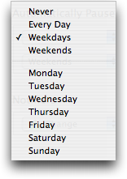
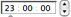

Filter Info Auto Pause
Auto Pause
The Auto Pause page of the Filter Info pane enables you to suspend checking all tests that use this kind of filter on specified days (or any day) and times. Normally you'd probably want to auto-pause a test instead, but this is a quick way to pause a kind of filter for many tests.
From the pop-up menu on the left of each line, choose Every Day, Weekdays, Weekends, or a specific day of the week to indicate which day(s) to automatically pause this filter. Choose Never to temporarily disable this line (its times will be remembered), or click the  button to remove the line.
button to remove the line.
from  Enter the time that the filter should be paused on the given day(s). Click the arrow under the field to select the time component, and use the stepper to the right to increase or decrease the numbers; or just click a value and type a new value, and tab to the next component. The default value is the current (or last-used) time.
to As for the from field, this sets the time that the filter should be automatically resumed.
Click this button to remove the associated line.
 Click this button to add a new line, allowing multiple pause times.
Click this button to add a new line, allowing multiple pause times.